Getting Beyond the Basics with Azure Machine Learning
Kevin Feasel (@feaselkl)https://csmore.info/on/amlindepth
Who Am I? What Am I Doing Here?


Motivation
My goals in this talk:
- Quickly refresh your knowledge of Azure Machine Learning.
- Dive into code-first programming with Azure ML.
- Walk through model registration and MLflow.
- Create and use machine learning pipelines.
- Explain the impetus behind MLOps.
What We'll Do
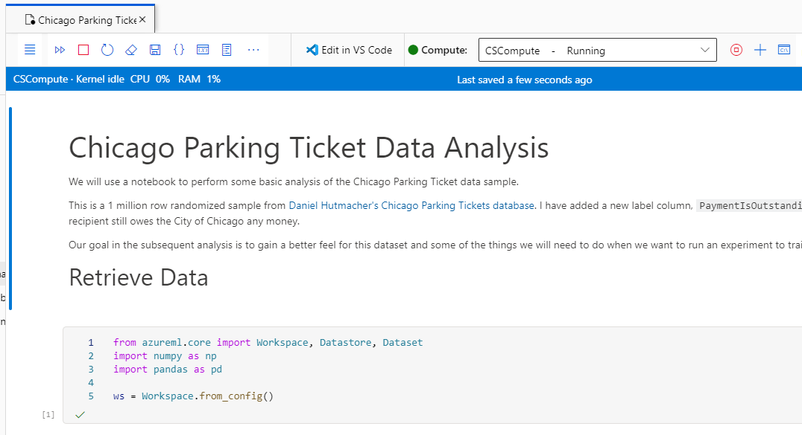What We'll Do
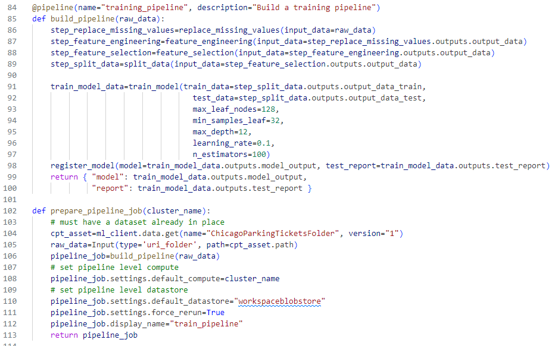What We'll Do
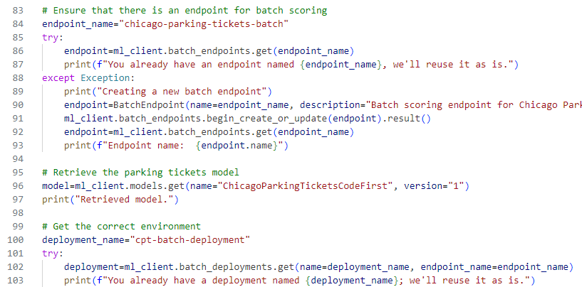What We'll Do
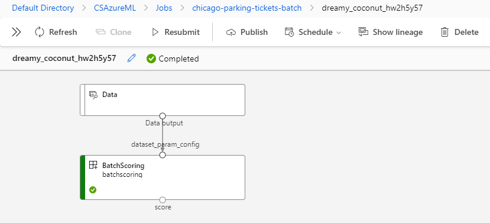What We'll Do
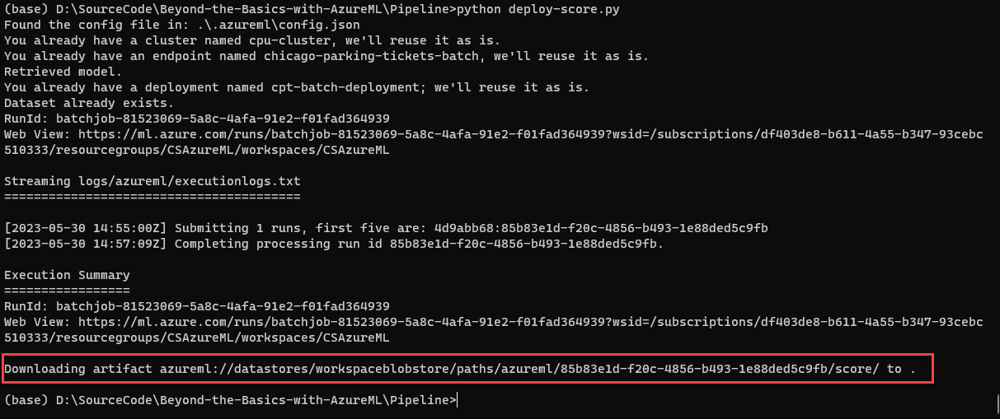Agenda
- A Brief Primer on Azure ML
- Code-First Programming
- MLflow
- ML Pipelines
- MLOps
What is Azure Machine Learning?
Azure Machine Learning is Microsoft's primary offering for machine learning in the cloud.
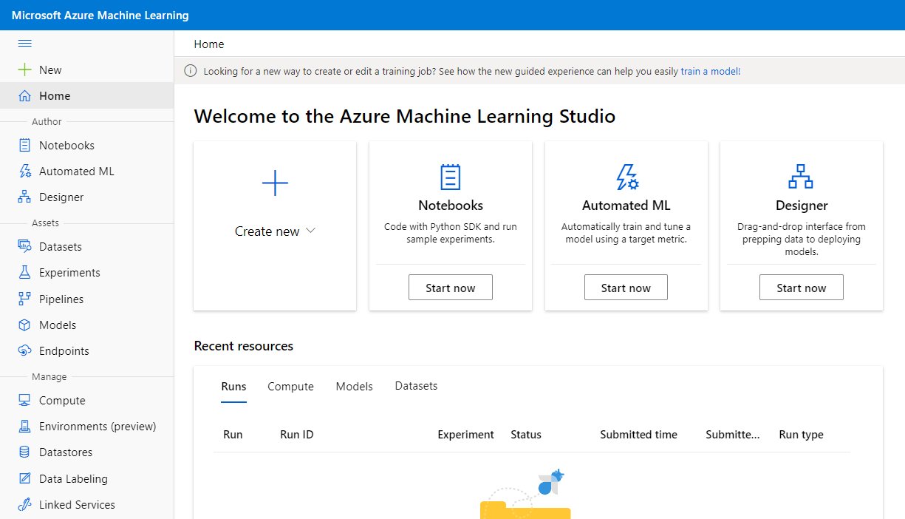Key Components
There are several major components which make up Azure ML.
- Datastores
- Datasets
- Compute instances
- Compute clusters
- Azure ML Studio Designer
- Experiments and Runs
- Models
- Endpoints
- Inference clusters
Datastores
Datastores are connections to where the data lives, such as Azure SQL Database or Azure Data Lake Storage Gen2.
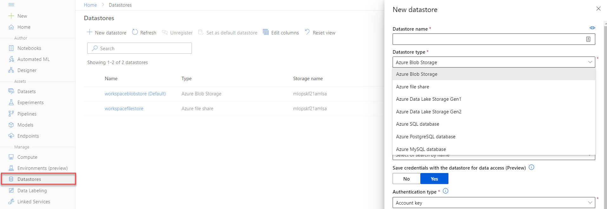Datasets
Datasets contain the data we use to train models.
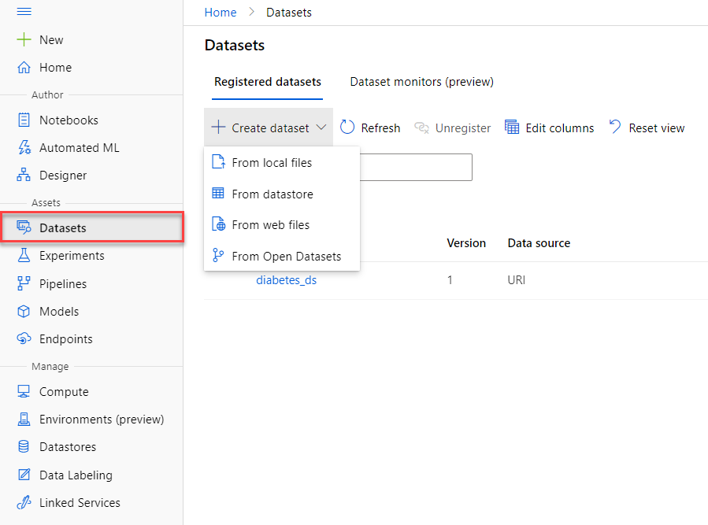Compute instances
Compute instances are hosted virtual machines which contain a number of data science and machine learning libraries pre-installed. You can use these for easy remote development.
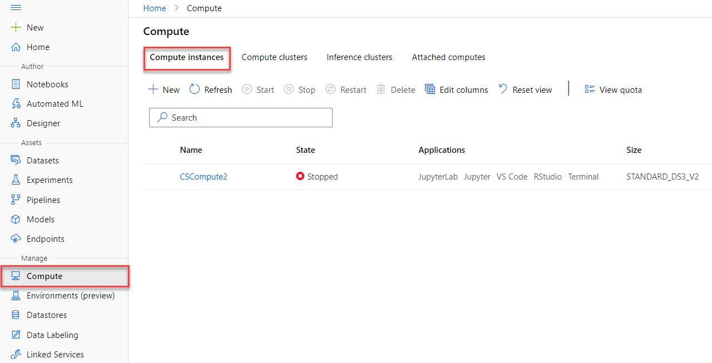Compute clusters
Spin up compute clusters for training and let them disappear automatically afterward to save money.
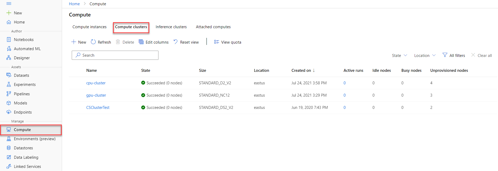Designer
The Azure ML Studio Designer allows you to create training and scoring pipelines using a drag-and-drop interface reminiscent of SQL Server Integration Services.
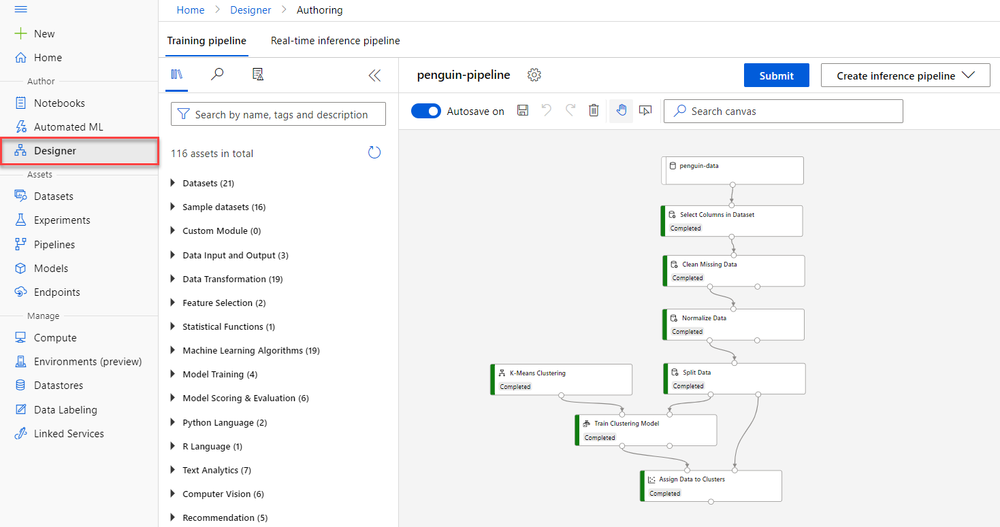Experiments and Runs
Experiments allow you to try things out in a controlled manner. Each Run of an experiment is tracked separately in the experiment, letting you see how well your changes work over time.
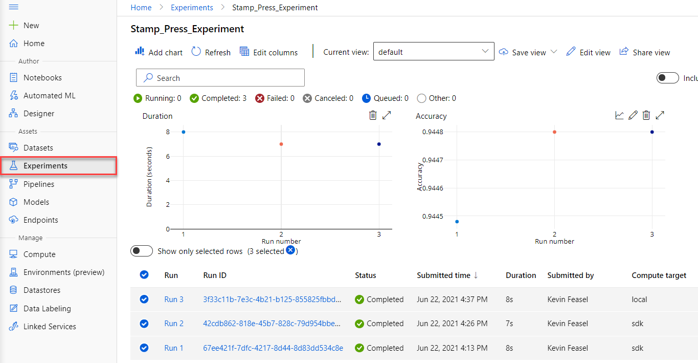Models
The primary purpose of an experiment is to train a model.
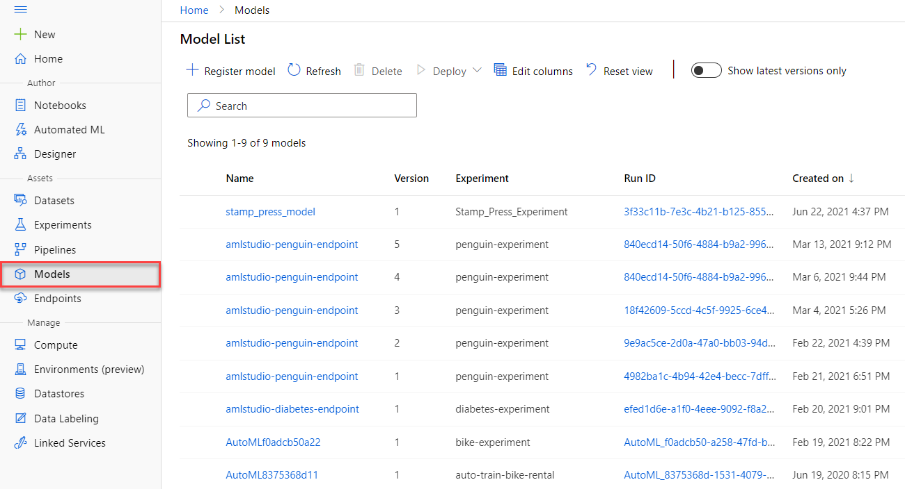Endpoints
Once you have a trained model, you can expose it as an API endpoint for scoring new data.
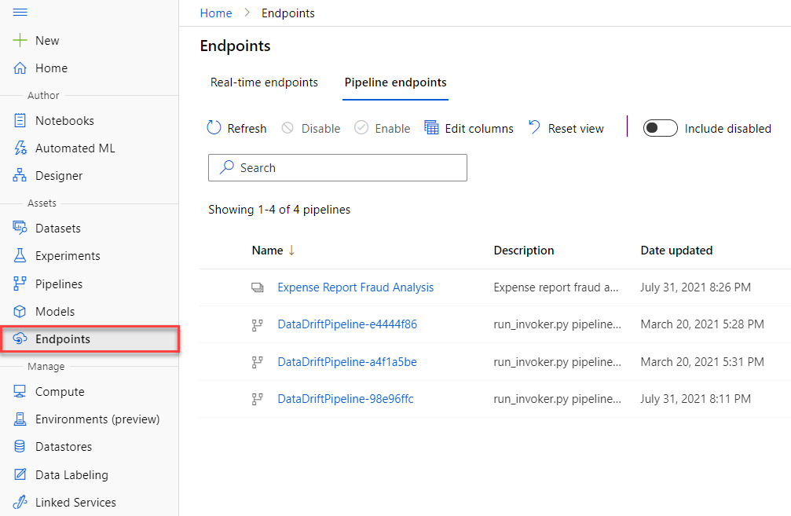Inference clusters
Inference clusters are an easy method to host endpoints for real-time or batch scoring.
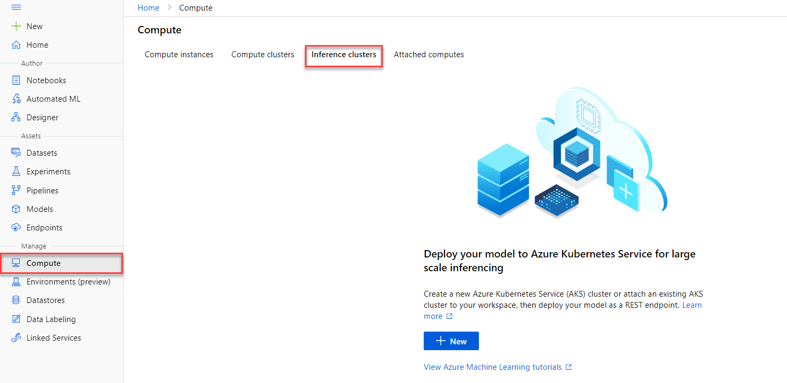Agenda
- A Brief Primer on Azure ML
- Code-First Programming
- MLflow
- ML Pipelines
- MLOps
Thinking in Code
The Azure ML Studio Designer works well enough for learning the basics of machine learning projects, but you'll quickly want to write code instead.
There are two methods which Azure ML supports for writing and executing code that we will cover:
- Executing code with Jupyter notebooks
- Executing code from a machine with Visual Studio Code
Notebooks
Azure ML has built-in support for Jupyter notebooks, which execute on compute instances.
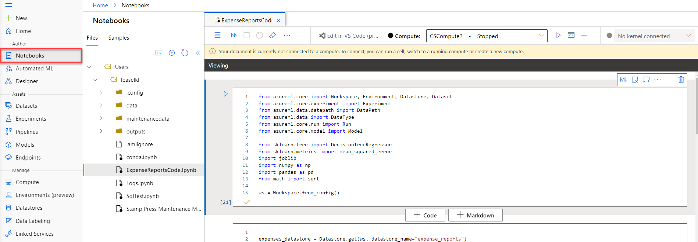The Python SDK
Azure ML has a Python SDK (v2) which you can use to work with the different constructs in Azure ML, such as Datastores, Datasets, Environments, and Runs. The v1 SDK is still around, but Microsoft recommends you switch to v2.
For all other languages, use the Azure CLI v2. The CLI covers Python as well as other languages like R, C#, and Java, and the Python v2 SDK is feature-compatible with these CLI calls.
When to Use Which?
Use notebooks for exploratory data analysis and rapid code development. Notebook code is generally not production-quality and is intended to get answers quickly.
Use the SDK or CLI to create and execute production-grade code. It is easier to deploy, automate, and log results from code scripts rather than notebooks.
Demo Time
Executing Code Locally
We can also execute notebooks and full-on AML code using Visual Studio Code.
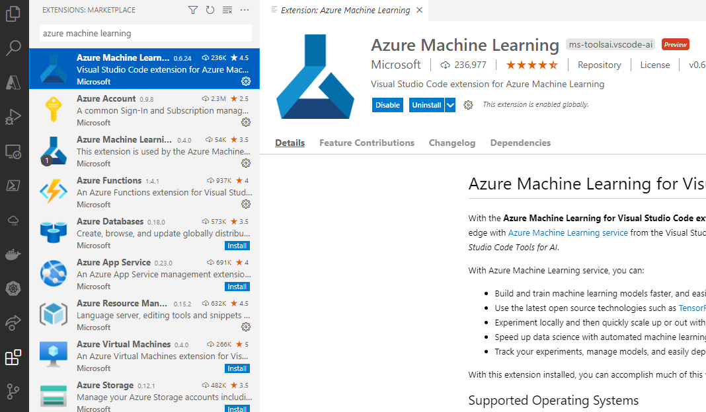The extension provides a direct interface to your Azure ML workspace and also lets you turn a local machine into a compute instance if you have Docker installed.
Agenda
- A Brief Primer on Azure ML
- Code-First Programming
- MLflow
- ML Pipelines
- MLOps
MLflow is an open source product designed to manage the Machine Learning development lifecycle. That is, MLflow allows data scientists to train models, register those models, deploy the models to a web server, and manage model updates.
MLflow is most heavily used in Databricks, as this is where the product originated. Its utility goes well beyond that service, however, and Azure Machine Learning has some interesting integrations and parallels with MLflow.
Four Products
MLflow is made up of four products which work together to manage ML development.
- MLflow Tracking
- MLFlow Projects
- MLflow Models
- MLflow Model Registry
MLflow Tracking
MLflow Tracking allows data scientists to work with experiments. For each run in an experiment, a data scientist may log parameters, versions of libraries used, evaluation metrics, and generated output files when training machine learning models.
Using MLflow Tracking, we can review and audit prior executions of a model training process.
MLflow Projects
An MLflow Project is a way of packaging up code in a manner which allows for consistent deployment and the ability to reproduce results. MLflow supports several environments for projects, including via Conda, Docker, and directly on a system.
MLflow Models
MLflow offers a standardized format for packaging models for distribution. MLflow takes models from a variety of libraries (including but not limited to scikit-learn, PyTorch, and TensorFlow) and serializes the outputs in a way that we can access them again later, regardless of the specific package which created the model.
MLflow Model Registry
The MLflow Model Registry allows data scientists to register models. With these registered models, operations staff can deploy models from the registry, either by serving them through a REST API or as a batch inference process.
MLflow and Azure ML
If you already use MLflow for model tracking, you can choose to use it to store Azure ML models as well. That said, the model registration capabilities in Azure Machine Learning were intentionally designed to emulate the key capabilities of MLflow.
MLflow Tracking and Experiments
Experiments are the analog to MLflow Tracking.
MLflow Tracking and Experiments
For a given run of an experiment, we can track the details of metrics that we have logged.
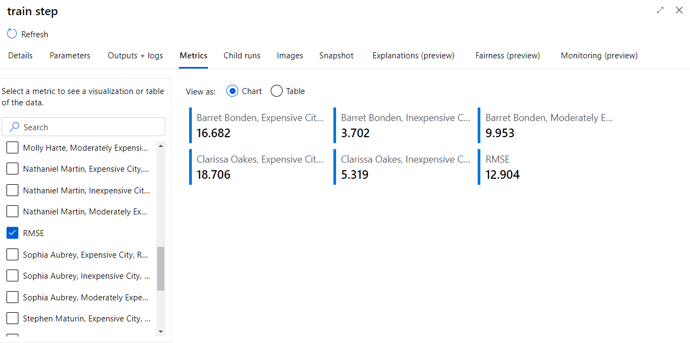MLflow Tracking and Experiments
We can also review output files, parameters passed in, and even the contents of Python scripts used to along the way.
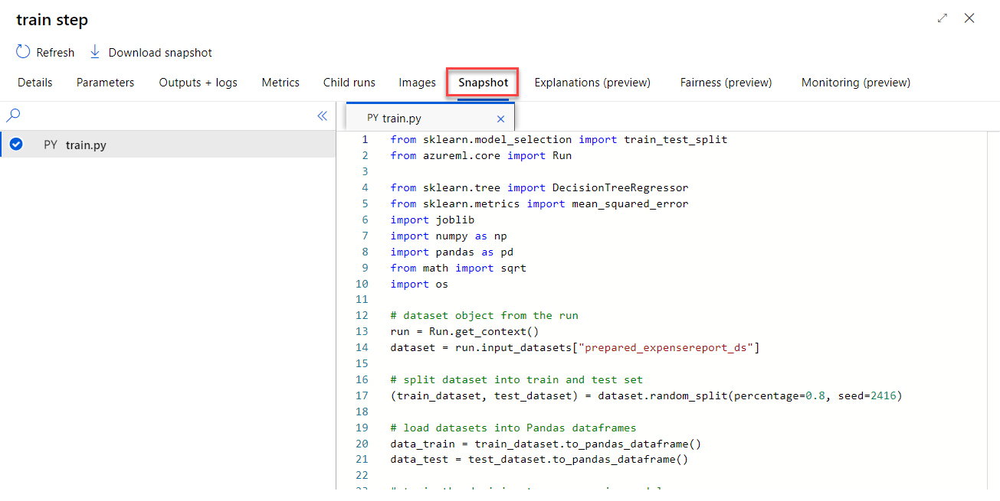MLflow Projects and Pipelines
If you use MLflow Projects to package up code, you can execute that code on Azure ML compute.
The closest analog in Azure ML is the notion of Pipelines, which we will cover in the next section.
MLflow Model Registry and Azure ML Models
We can register and store ML models in Azure ML Models.
MLflow Model Registry and Azure ML Models
Each model contains stored artifacts, including a serialized version of the model and any helper files (such as h5 weights) we need.
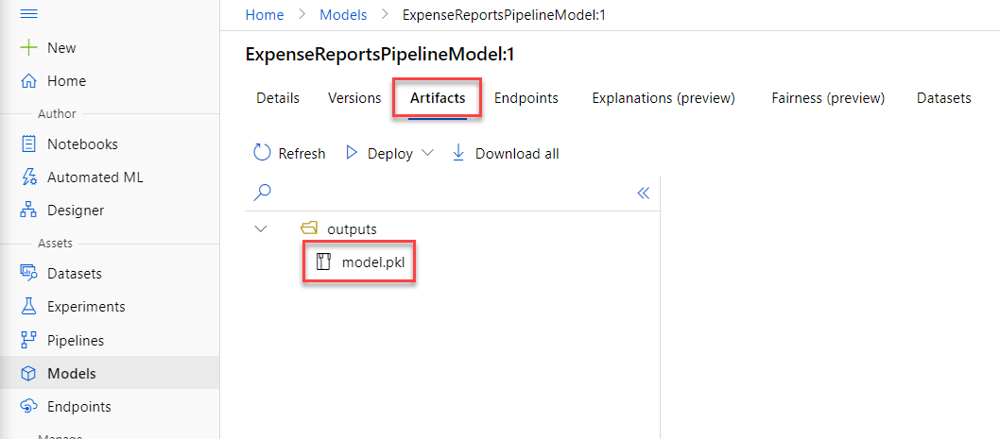MLflow Model Registry and Azure ML Models
Each model also contains information on the datasets used to train it, including links to the dataset and version of note.
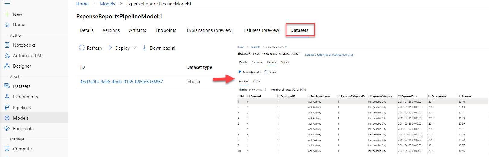MLflow Model Registry and Azure ML Models
Once we have a model in place we like, Ops can deploy it.
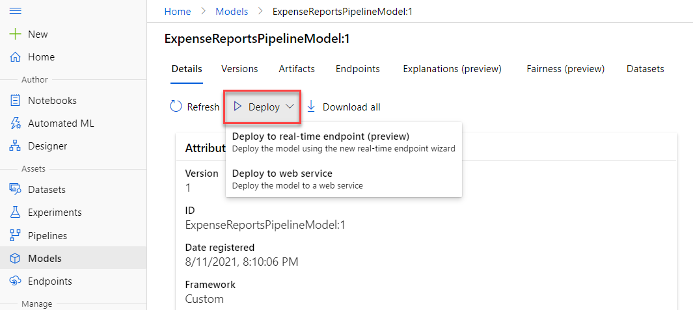Agenda
- A Brief Primer on Azure ML
- Code-First Programming
- MLflow
- ML Pipelines
- MLOps
Pipelines
Azure ML is built around the notion of pipelines. With machine learning pipelines, we perform the process of data cleansing, data transformation, model training, model scoring, and model evaluation as different steps in the pipeline.
Then, we can perform data transformation and training as part of an inference pipeline, allowing us to generate predictions.
A Reminder
When we use the Designer to train and deploy models in Azure ML, we're actually creating pipelines.
Why Pipelines?
There are several reasons to use pipelines.
- Script code for source control
- Control deployment on different types of instances, including local and remote
- Support heterogeneous compute--only some tasks need GPU support, for example
- Re-use components between pipelines
- Collaborate on data science projects with others
- Separate areas of concern--some can focus on data prep, others on training, others on deployment/versioning
Pipeline Steps
In order to execute pipeline code from Visual Studio Code, we need Python installed, as well as the Azure ML SDK v2 for Python. It's easiest to install the Anaconda distribution of Python.
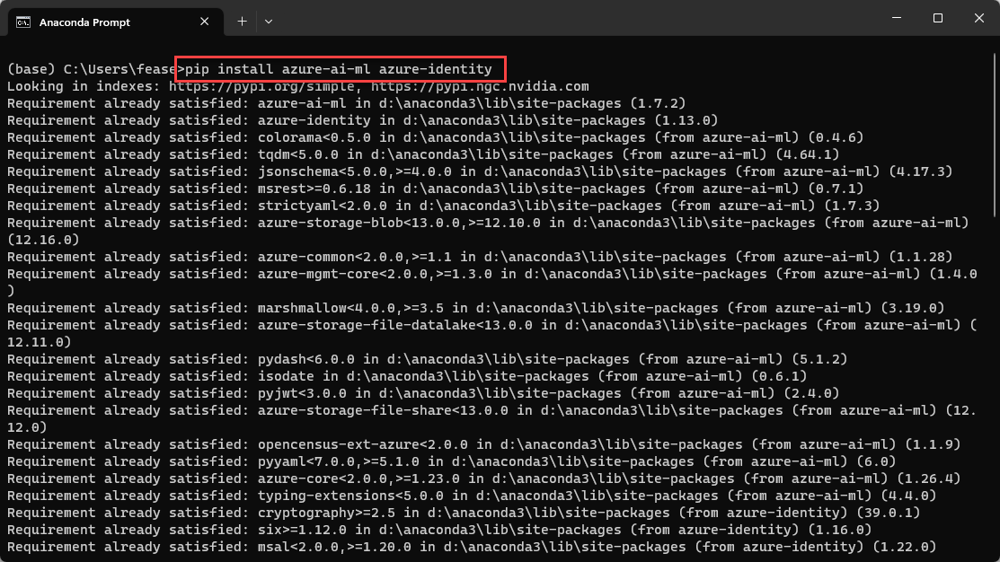Demo Time
Building Pipelines in Code
Going back to what we learned from the notebook, let's create an Azure ML pipeline. To do that, we will:
- Create a Python script runner.
- Create YAML and Python files for each step in the pipeline.
- Perform model training and testing against an input dataset.
- Register the resulting model we create.
- Write code to perform model inference (scoring).
Demo Time
Agenda
- A Brief Primer on Azure ML
- Code-First Programming
- MLflow
- ML Pipelines
- MLOps
Deploying Code: A Better Way
One development we've seen in software engineering has been the automation of code deployment. With Azure ML, we see a natural progression in deployment capabilities:
- Model deployment via the Azure ML Studio UI
- Model deployment via manually-run notebooks
- Model deployment via Azure CLI
- Model CI/CD with Azure DevOps or GitHub Actions
MLOps and Software Maturity
Machine Learning Operations (MLOps) is built off of the principles of DevOps, but tailored to a world where data and artifacts are just as important as code and the biggest problem isn't deployment--it's automated re-training and re-deploying.
A proper treatment of MLOps would take an entire session.
Wrapping Up
Over the course of this talk, we have looked at ways to take Azure Machine Learning beyond a drag-and-drop UI for machine learning. We covered concepts of code-first programming and ML pipelines, introduced MLflow and its AML analogues, and have seen how MLOps can help us push changes out more efficiently.
Wrapping Up
To learn more, go here:
https://csmore.info/on/amlindepth
The next talk in the series:
https://csmore.info/on/mlops
And for help, contact me:
feasel@catallaxyservices.com | @feaselkl
Catallaxy Services consulting:
https://CSmore.info/on/contact